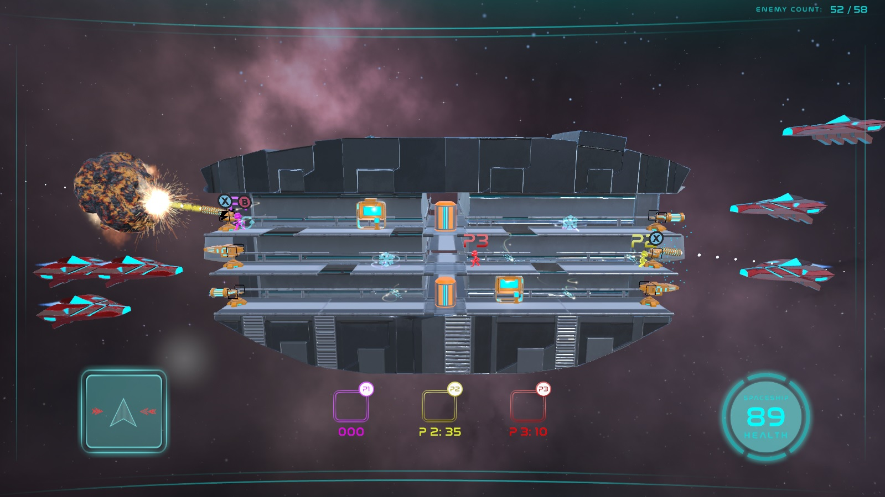
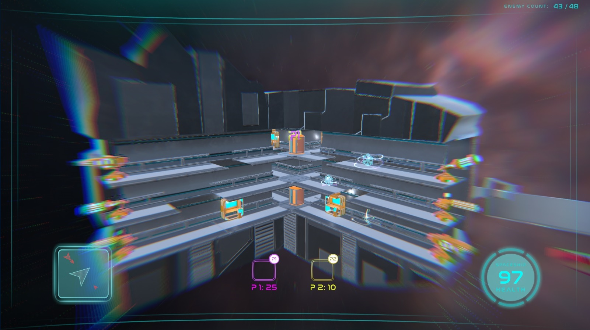
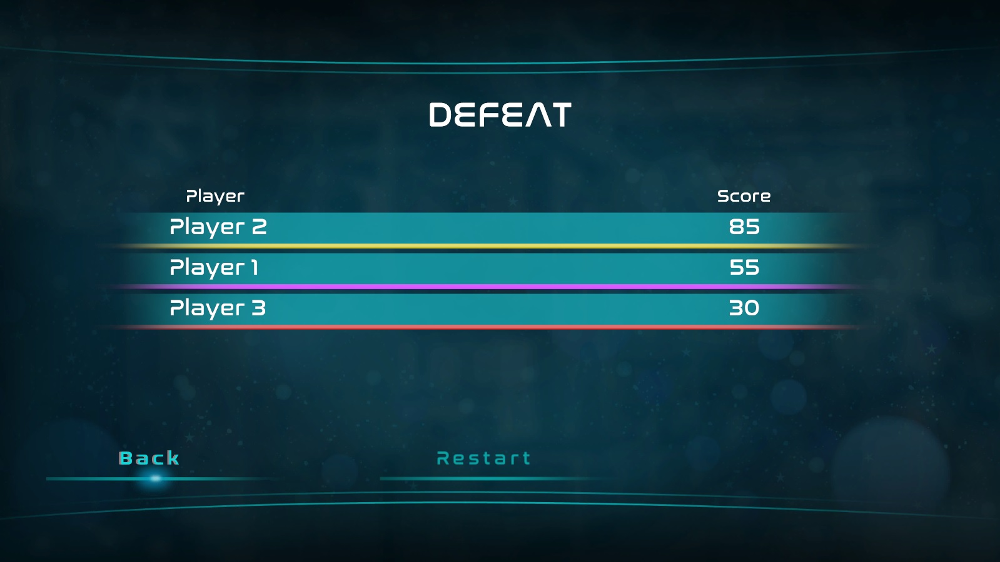

Space Tricksters
Space Tricksters é um base defense multijogador local cooperativo e competitivo. Enquanto todos os jogadores precisam defender a nave dos inimigos, eles ainda devem atrapalhar os seus companheiros para que consigam destruir mais inimigos e ganhar mais pontos.
Durante a partida, os jogadores tem acesso a power ups que atrapalham os outros jogadores, como o power up de gelo, e o de troca de posição.
Space Tricksters foi criado usando Unity Engine, como um projeto acadêmico no curso de Jogos Digitais na Universidade Feevale.
Visite a página do jogo no itch.io pelo link abaixo: